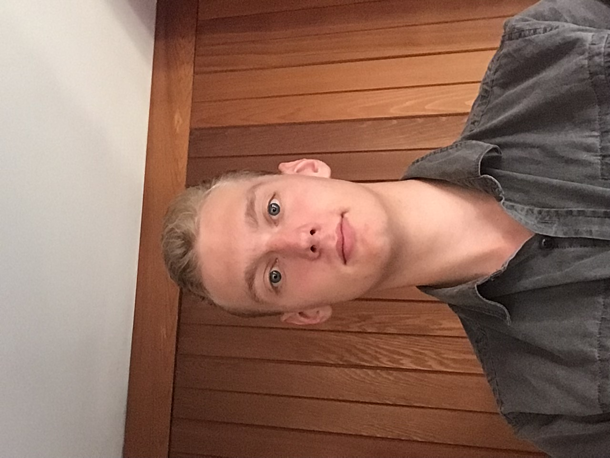

Text-To-Game
Project Name: Text-To-Game
Anh Keit-Steven Pham
S3815557@student.rmit.edu.au
I am in my second semester of this course. My passions in IT aren’t as clear as I want them to be yet. In
terms of my technical abilities I still consider myself a beginner. I find coding to be quite intimidating
and a bit stressful but still rather interesting. To find my interests I still need to expand and delve
further into my learning to make a concrete decision. I find that my lack of technical skills tends to hold
me back in properly contributing to the team so at the very least, I’d like to make progress towards
improving my abilities. I predict that when it comes to coding in this project, I might find myself
struggling but I will still be able to contribute a lot to written work.
Nicholas Leppan
S3840050@student.rmit.edu.au
I completed intro to IT in semester 1 and both of my parents work in the IT industry. I very much prefer the
technical side of IT and programming. I am quick to learn and I am always playing around with different
programming tricks and techniques. I love AI and creating any program big or small that I know will help
someone. I do tend to be forgetful and I am unfortunately the type of student who likes to push projects off
until the last minute, but this is something I am pushing to fix. I am unfortunately not very good at
writing my written contributions tend to be either too lengthy or too short and negatively impact the
overall project. I expect to be in a technical lead, and I hope to help the people who are still starting
with programming to get their bearings and explain the parts of the program that they may struggle with.
Jack Brown
S3781527@student.rmit.edu.au I have always loved IT and have been playing around with computers since I was about 5 years old. I love taking them apart and putting them back together, hoping it will work again. I love playing games and that’s where my interests started. I am pretty new at programming and will need to put in a lot of work to be able to actually help my group and not hinder, however I am reasonably good at writing and will be able to cover the report side of the project comfortably. I will struggle with the coding side of things but hope to team up with one of the technical leads of the group and learn how to do it, while helping them as much as I can with the report writing if they need the assistance.
Nathan Martina
S3812496@student.rmit.edu.au I am currently in my second semester here at RMIT, my grandfather worked in the industry and I am currently working at a small it shop doing repairs and small server work, I enjoy programming quite a lot I know HTML CSS, VB, Java, python, and some other .NET framework languages I believe that I will be more useful for the team with my GitHub and programming knowledge rather than my writing skills I see myself as being stronger at programming. I expect to be the lead in terms of GitHub, and I am willing to teach others how to use it properly as well as helping others with any programming problems that they come in to.

Anthony Tran
S3780694@student.emit.edu.au My name is Anthony and I’m studying in my second semester at RMIT. I have grown up surrounded by technology and computers and have always been fascinated by them and have spent a considerable amount of time on them throughout my life. My passion in IT was strongly reinforced by my dad who also worked within the IT field as an IT consultant and thus inspired me to also want to study within the IT field. My strong points in IT lie within troubleshooting and helping other people fix their technical issues. My main weakness would have to be programming however I am a beginner and am learning new things every day and am trying to improve my programming skills. Furthermore, I would like to hone my design skills as well as my programming skills and hope that this assignment will help me in achieving that. The challenges I see myself face within this assignment would have to be the coding aspects as I am not confident at all and hope that one of my other group members would be able to guide me in the right direction.
Carlin McNamara
S3784664@student.rmit.edu.au My name is Carlin McNamara and I'm currently in my first year of university studying one of my favourite hobbies that will eventually turn into a job. I’ve been invested in the world of technology for its seemingly alien-like characteristics which both scare and excite me. This all stems from one of my family members buying a computer back in 2008. This sparked my journey to learning programming, playing games, and socialising with friends online. I found myself naturally becoming more and more involved in the tech world and decided to start studying it. However, just like with any other skill, sometimes I can get put off whenever I can’t figure out how to do something in terms coding. Overcoming those moments make me want to continue do better so I can contribute more and help classmates in my group projects. My strongest skill is the ability to maintain my interest in computers. I am confident that this team is more than capable of accomplishing our assignment together as we all seemingly have the same level of dedication and passion towards our idea. We all have our own set of skills that we can learn from and adapt to, making us a good combination of students to be working together.